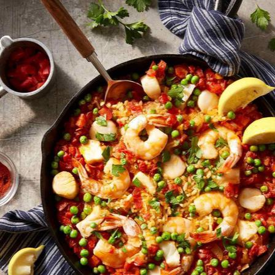
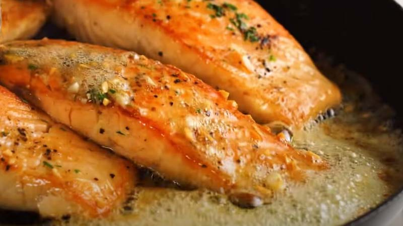

Recetas
Sumérgete en el arte culinario del mar con nuestras exquisitas recetas. En la sección de recetas de Del Río, te invitamos a explorar una variedad de platos deliciosos y creativos que resaltan la frescura y la calidad de nuestros productos marinos. Ya sea que estés buscando ideas para una cena especial o simplemente quieras descubrir nuevas formas de preparar tus pescados y mariscos favoritos, nuestra colección de recetas te sorprenderá y deleitará. Prepárate para descubrir sabores únicos y sumergirte en una experiencia culinaria única en el mundo del mar.
Paella Fácil de Mariscos
Ingredientes
- 4 1/2 tazas de agua caliente
- 1 1/2 cucharadas de Maggi Caldo Sabor a Pollo Granulado
- 3 cucharadas de aceite de oliva extra virgen
- 1 1/2 tazas de cebolla picada
- 3 dientes de ajo, finamente picados
- 2 tazas de arroz Arborio
- 2 tazas de tomates picados
- 2 cucharaditas de pimentón (paprika) ahumado
- 3 onzas de trozos de pescado blanco firme
- 1 taza de guisantes congelados
- 3 onzas de camarones grandes pelados y las venas retirados
- 3 onzas de vieiras
- Perejil fresco picado
- Rodajas de limón
Pasos
Paso 1:
Combinar el agua y el caldo en una taza medidora grande para líquidos; mover para disolver el caldo. Dejar de lado.
Paso 2:
Calentar el aceite en una sartén grande de hierro fundido a fuego medio. Añadir la cebolla y el ajo; Cocinar, moviendo frecuentemente, durante 2 minutos. Agregar el arroz; Cocinar, moviendo frecuentemente, durante 2 minutos. Agregar los tomates y el pimentón; Cocinar, moviendo frecuentemente, durante 2 minutos.
Paso 3:
Añadir 4 tazas del caldo preparado; mover. Llevar a hervir a fuego medio-alto. Reducir el fuego a bajo. Colocar el pescado en el arroz; Cocinar durante 10 minutos.
Paso 4:
Cubrir con los guisantes. Arregle los camarones y las vieiras sobre los guisantes.
Paso 5:
Cubrir bien con la tapa o papel de aluminio; Cocinar por 10 a 15 minutos o hasta que los camarones y las vieiras estén bien cocidos. Si no están bien cocidos, agregar más caldo y cocinar unos minutos más.
Paso 6:
Espolvorear con perejil. Servir con rodajas de limón.
Salmón a la mantequilla con ajo y limón
Ingredientes
- 500 g. de salmón cortado en 4 piezas
- 40 g. mantequilla en trozos
- 4 dientes de ajo picados
- 1 cucharada de aceite de oliva virgen extra
- 1/2 jugo de un limón o más, al gusto
- 1 cucharada de perejil fresco picado opcional
- Sal y pimienta negra molida al gusto
Pasos
Paso 1:
Saca el salmón de la nevera 15-20 minutos antes de comenzar la receta.
Paso 2:
Picamos el ajo muy picadito con un cuchillo.
Paso 3:
Corta el salmón en 4 partes iguales y séquelo con papel. Salpimentamos cada pieza de salmón generosamente con sal y pimienta.
Paso 4:
En una sartén a fuego medio-alto, añade 1 cucharada de aceite de oliva y ¼ de la mantequilla. Deje que la sartén se caliente previamente durante 2 minutos.
Paso 5:
Ponga el salmón en la sartén (con la piel hacia abajo) durante 5 minutos, luego reduzca a fuego medio y le da la vuelta al pescado con unas pinzas de cocina, cocina por el otro lado 2-3 minutos (debe estar completamente dorado). Una vez hecho sacamos a un plato.
Paso 6:
Bajamos a fuego bajo la sartén y añadimos el resto de mantequilla. Esperamos a que se derrita.
Paso 7:
Añadimos los ajos picados y 1/2 zumo de un limón. Removemos los ajos en la salsa hasta que se pongan dorados (no dejar que se quemen los ajos o tendrán un sabor amargo).
Paso 8:
Ponga el salmón nuevamente en la sartén, con una cuchara le echamos salsa por encima al salmón durante un minuto 1, espolvoreamos el perejil, y ya estaría listo para servir inmediatamente.
Filetitos de pescado al limón

Ingredientes
Para los filetitos:
- 10 gramos de Knorr En Polvo Caldo De Pollo (1 cubo)
- Jugo de 2 limones
- 6 cucharadas de Hellmanns Clásica Mayonesa
- 800 gramos de filetes de pescado blanco (de aprox. 130 gramos cada uno)
Para la ensalada:
- 150 gramos (o 1 pieza pequeña) de pepino cortado en medias lunas sin semillas
- 200 gramos (3-4 piezas) de jitomates cortados en 6 gajos
- 3 cucharadas de aceite de oliva
- 4 cucharadas de vinagre blanco
- 1/2 cucharadita de orégano molido
Pasos
Paso 1:
Mezclar Knorr® Caldo de Pollo con el jugo de limón hasta formar una pasta.
Paso 2:
Incorporar Hellmann's Clásica y con esa mezcla untar los filetes de pescado.
Paso 3:
Cocinar los filetes por 8 minutos en un sartén de teflón, calentado previamente a temperatura media.
Paso 4:
Para preparar la ensalada: mezclar todos los ingredientes y servir acompañando los filetes.